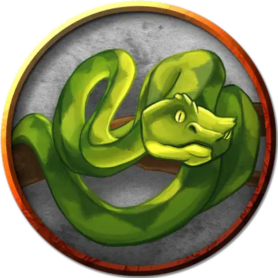

Гигантский удав
Giant Constrictor Snake
Огромный Зверь, без мировоззрения

Класс Доспеха 12
Хиты 60 (8к12 + 8)
Скорость 30 футов, плавая 30 футов
| мод | спас | ||
|---|---|---|---|
| СИЛ | 19 | +4 | +4 |
| ЛОВ | 14 | +2 | +2 |
| ТЕЛ | 12 | +1 | +1 |
| мод | спас | ||
|---|---|---|---|
| ИНТ | 1 | −5 | −5 |
| МДР | 10 | +0 | +0 |
| ХАР | 3 | −4 | −4 |
Навыки Восприятие +2
Чувства слепое зрение 10 футов, пассивное Восприятие 12
Опасность 2 (450 опыта)
Бонус мастерства +2
Среда обитания Болото, Лес, Под водой, Подземье, Пустыня
Действия
Укус. Рукопашная атака оружием: +6 к попаданию, досягаемость 10 футов, одно существо. Попадание: 11 (2к6 + 4) колющего урона.
Сжимание. Рукопашная атака оружием: +6 к попаданию, досягаемость 5 футов, одно существо. Попадание: 13 (2к8 + 4) дробящего урона, и цель становится схваченной (Сл высвобождения 16). Пока цель схвачена, она опутана, и удав не может сжимать другую цель.